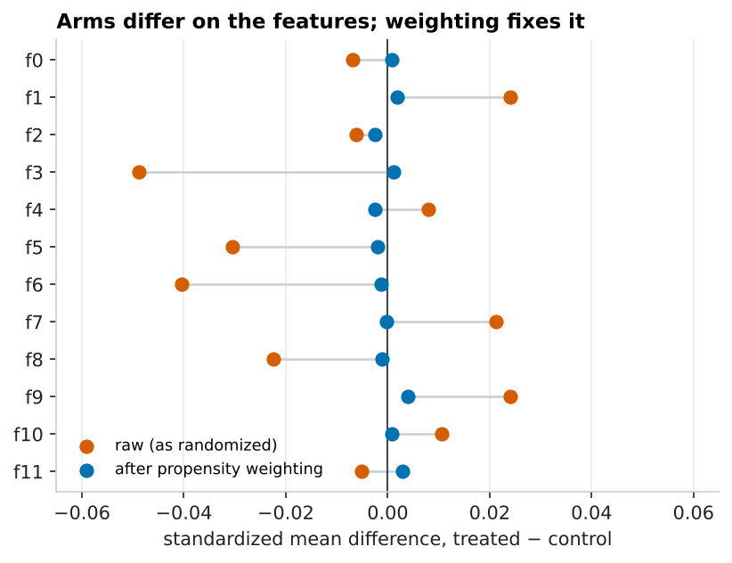
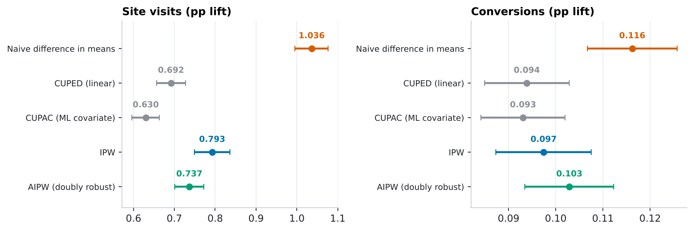
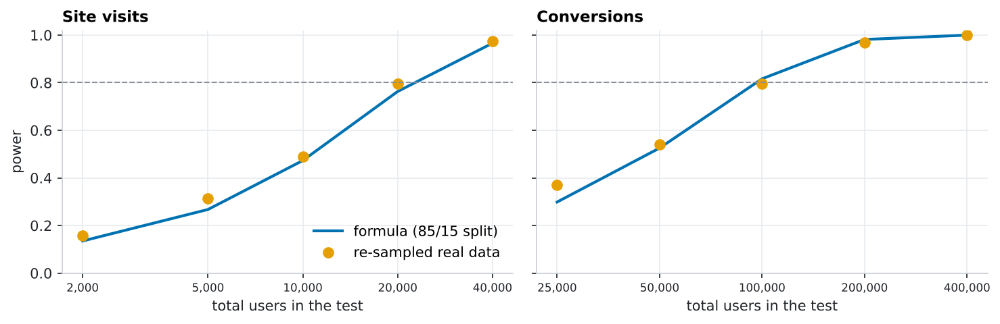
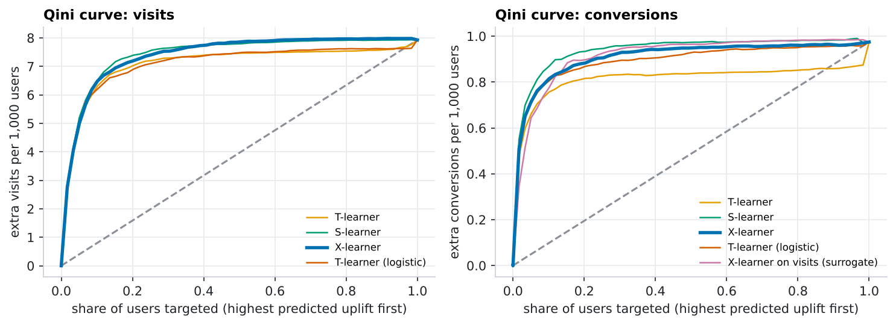
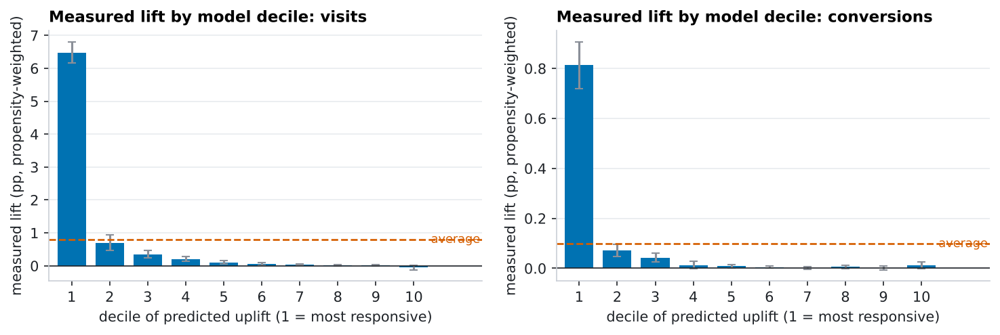
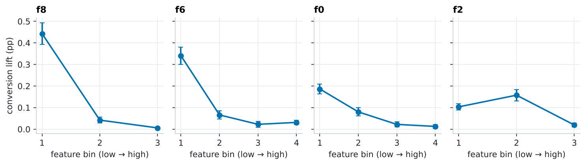
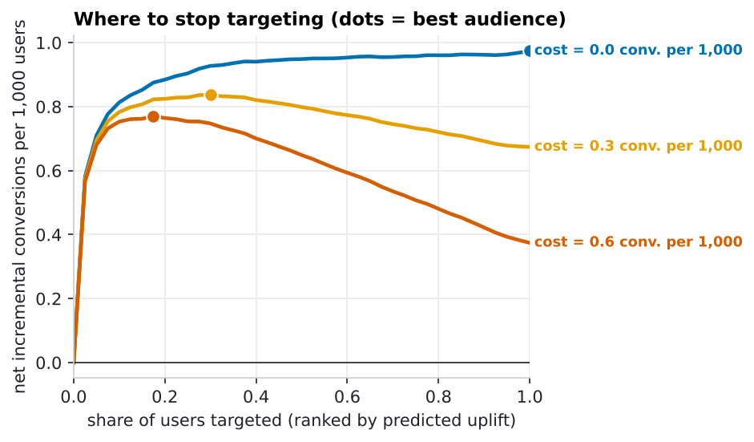
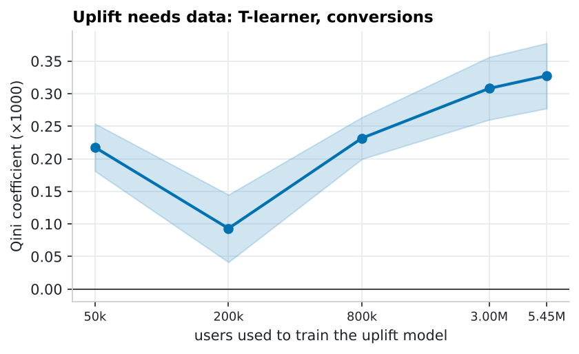

The randomization wasn't quite random, and it changed the answer
The Criteo uplift benchmark: 13,979,592 users, an ad campaign shown to 85% of them. Same toolkit as the e-mail case study, but at 200× the scale, and with a twist: the arms are measurably imbalanced, so the naive A/B read-out overstates the lift. I audit it, correct it, and then find the 20% of users who carry most of the effect.
TL;DR. The campaign works, but the textbook difference-in-means overstates the visit lift by ~41% and the conversion lift by ~13%, because the treated group was slightly tilted toward users who visit anyway. Propensity weighting, an outcome model and their doubly-robust combination agree and restore balance. After adjustment, uplift is extremely concentrated: the top decile of users shows a 0.81 pp conversion lift vs a 0.10 pp average, and targeting the top 20% captures ~91% of all incremental conversions.
The experiment
Criteo AI Lab's uplift dataset (v2.1; Diemert et al.): 13,979,592 users, 12 anonymised numeric features, a treatment flag (85% treated), and three outcomes: site visit, conversion and ad exposure. Only 3.5% of treated users were actually exposed to an ad, so "treatment" really means eligible to be shown ads. Exposure is post-treatment and is never used as a feature.
To keep every model honest the data is split into three disjoint parts: A (1,537,755 users, propensity and CUPAC covariate models), B (5,452,040, outcome and uplift models) and C (6,989,797, a holdout where every estimate below is computed). The full pipeline runs in about 15 minutes on 4 CPU cores.
1 · Was assignment actually random?
The split passes a sample-ratio check against 85/15 (χ² p = 1.00). But with 14M rows, covariate balance is the sharper test:

A classifier trained on part A to predict treatment from the 12 features scores AUC 0.510 on holdout C (95% CI [0.5095, 0.5107]). Under perfect randomization that would be 0.5. It is a faint signal, but the same features predict visits very well, and that is what matters: a faint tilt in who gets treated, multiplied by a strong outcome predictor, is a real bias. Estimated assignment probabilities range from 0.81 to 0.97 (median 0.848), so overlap is excellent and weights are benign (effective sample size 100.0% of nominal). After weighting by the inverse propensity, the largest remaining imbalance falls to 0.0040.
Why might this happen? Published descriptions say the data pool several incrementality tests; if their treated/control ratios differ, any feature that identifies the sub-test predicts assignment. The features are anonymised, so I can't verify that. Another possibility, that features were recorded after treatment and so were affected by it, would make adjusting for them wrong. The evidence below favours the first explanation (three independent adjustments agree and restore balance), but balance on observed features can't rule out unobserved confounding.
2 · What is the effect, really?

| Metric | Estimator | Lift (pp) | Std. error (pp) | vs naive | Variance cut |
|---|---|---|---|---|---|
| Site visit | Naive difference in means | 1.036 | 0.0207 | – | – |
| Site visit | CUPED, linear in the 12 features | 0.692 | 0.0179 | -33% | 28% |
| Site visit | CUPAC (ML covariate) | 0.630 | 0.0173 | -39% | 33% |
| Site visit | IPW (estimated propensity) | 0.793 | 0.0221 | -24% | – |
| Site visit | AIPW (doubly robust) | 0.737 | 0.0179 | -29% | 34% |
| Conversion | Naive difference in means | 0.116 | 0.0049 | – | – |
| Conversion | CUPED, linear in the 12 features | 0.094 | 0.0046 | -19% | 12% |
| Conversion | CUPAC (ML covariate) | 0.093 | 0.0046 | -20% | 13% |
| Conversion | IPW (estimated propensity) | 0.097 | 0.0052 | -16% | – |
| Conversion | AIPW (doubly robust) | 0.103 | 0.0048 | -11% | 14% |
The naive visit lift is 1.04 pp; every adjusted estimator lands between 0.63 and 0.79 pp, with the doubly-robust estimate at 0.74 pp (95% CI [0.70, 0.77]). For conversions the shift is smaller, 0.116 pp naive vs 0.103 pp adjusted, but still around 2.8 adjusted standard errors. Either way the campaign clearly works; the question is how much to credit it, which is what a budget decision depends on.
Intent-to-treat vs the effect on people who saw an ad
Since only 3.5% of treated users were exposed (and control users never could be), the ITT lift is diluted. Scaling by the exposure rate (a Wald / complier-average estimate, assuming ads affect only people who see them) gives a conversion lift of 2.9 pp per exposed user (95% CI [2.6, 3.2] pp) and 21 pp for visits.
3 · CUPED, CUPAC and what they really do
With no pre-experiment metric available, I use the same idea with the 12 pre-treatment features: a gradient-boosting model fitted on part A predicts each user's outcome, and CUPED subtracts that prediction (CUPAC). Unlike the Hillstrom data, where prior-year spend barely predicted spend (0.1% variance cut), these features are highly informative about visits:
- Visits: CUPAC removes 33% of the variance (linear CUPED on the raw features: 28%); AIPW's outcome model cuts the standard error by a similar amount relative to IPW (34% of variance).
- Conversions: only 13%. A 0.3%-positive outcome is hard to predict.
- In sample-size terms (to detect the adjusted effect with 80% power at the actual 85/15 split): visits 42,880 → 28,194 users (34% fewer); conversions 121,114 → 104,747 (14% fewer).
A warning that only shows up with imbalanced arms. CUPED's promise is "same expected effect, less variance". Here the CUPED and CUPAC point estimates moved (1.04 → 0.63 pp for visits), far more than their standard errors shrank. That shift is not variance reduction; it is the covariates quietly correcting a confounded comparison. Treat an estimate that moves more than the variance reduction can explain as a randomization alarm, then fix it properly with IPW/AIPW rather than a single-coefficient adjustment (the two still differ from each other by about 0.1 pp).
4 · Power and allocation
The experiment was 85/15 by design: more exposure, but a small control group. The control group is what limits precision, so unequal splits cost power:
| Metric | Treatment / control split | Relative MDE, 100k users | Relative MDE, 1M users |
|---|---|---|---|
| Site visit | 50 / 50 | 9% | 2.8% |
| Site visit | 75 / 25 | 10% | 3.3% |
| Site visit | 85 / 15 (as run) | 13% | 3.9% |
| Conversion | 50 / 50 | 45% | 13.1% |
| Conversion | 75 / 25 | 49% | 15.0% |
| Conversion | 85 / 15 (as run) | 59% | 18.1% |
At 100,000 users, detecting a conversion lift needs a 59% relative change with the 85/15 split vs 45% at 50/50, roughly 1.7× more users for the same power. The 14M-user campaign was far beyond what the average effect needs (121,114 users); its scale pays off for uplift modelling, not for the headline A/B result. I checked the formulas by repeatedly subsampling the real data:

The live calculator handles uneven splits: set "traffic to control" to 15%.
5 · Uplift: who is the ad actually changing?
Four learners (S, T, X and a logistic T-learner) are trained on part B (5,452,040 users) and scored on holdout C. Because assignment depends on the features, evaluation uses propensity-weighted Qini curves and uplift-by-decile, an extension I added to the toolkit (and unit-tested on synthetic confounded data). Confidence intervals come from 20 random chunks of the holdout. The X-learner (★) was fixed in advance as the primary model.
Site visits
| Model | Qini ×1000 | 95% CI | Top 20%: extra visits / 1,000 users | Random 20% |
|---|---|---|---|---|
| T-learner | 3.12 | [2.96, 3.29] | 7.02 | 1.59 |
| S-learner | 3.45 | [3.27, 3.63] | 7.39 | 1.59 |
| X-learner ★ | 3.43 | [3.23, 3.63] | 7.18 | 1.59 |
| T-learner (logistic) | 3.12 | [2.93, 3.30] | 6.89 | 1.59 |
Conversions
| Model | Qini ×1000 | 95% CI | Top 20%: extra conversions / 1,000 users | Random 20% |
|---|---|---|---|---|
| T-learner | 0.33 | [0.28, 0.38] | 0.81 | 0.19 |
| S-learner | 0.45 | [0.41, 0.49] | 0.93 | 0.19 |
| X-learner ★ | 0.42 | [0.38, 0.47] | 0.88 | 0.19 |
| T-learner (logistic) | 0.41 | [0.36, 0.45] | 0.87 | 0.19 |
| X-learner on visits (surrogate) | 0.43 | [0.38, 0.47] | 0.90 | 0.19 |
The S- and X-learners are best on conversions; the single-model S-learner beats the T-learner clearly, a typical pattern when the control arm is small and its positives are few. Ranking on visit uplift, a much denser signal, and evaluating on conversions (the "surrogate" row) works nearly as well as modelling conversions directly. Rank on the dense proxy, measure on the business metric.


Targeting the top 20% captures 91% of all incremental visits and 91% of incremental conversions (0.88 of 0.97 per 1,000 users), versus 20% for random targeting.
What distinguishes high-uplift users?
A model-free screen on holdout C (weighted conversion lift by bins of each feature) shows where the lift lives: low values of f8, f6 and f0. The features are anonymised so there is no business interpretation, but the pattern is consistent and large:

Where to stop?
Targeting has a price. Suppose each targeted user costs a fixed amount, expressed as a fraction of one conversion's value (e.g. ad cost $0.015 against a $50 conversion = 0.3 conversions per 1,000 users). The best audience shrinks as that cost grows:

| Cost per targeted user (conversions per 1,000) | Target everyone: net / 1,000 | Best audience → net / 1,000 | Gain vs everyone |
|---|---|---|---|
| 0.0 | 0.97 | 100% → 0.97 | +0% |
| 0.3 | 0.67 | 30% → 0.84 | +24% |
| 0.6 | 0.37 | 18% → 0.77 | +106% |
Illustrative costs; Criteo provides no prices. The audience size is chosen on the same holdout, which is optimistic, but with ~7M users the curve's maximum is stable.
How much data does uplift need?

Limitations
- All adjustments assume no unmeasured confounding; balance on 12 anonymised features cannot prove that.
- Uplift ranks are evaluated with an estimated propensity; the propensity model is trained on a disjoint split, and the CIs ignore model-training variance.
- One campaign, short outcome window; no revenue, so costs are illustrative.
- Data was obtained from a public GitHub mirror because the official host was unreachable. Row count (13,979,592) and overall rates match the published description, but I could not verify a checksum.
Reproduce
pip install -e ".[dev]"
python analysis/run_criteo.py # downloads ~300 MB once; ~15 min, 16 GB RAM
python analysis/build_criteo.py # renders this page